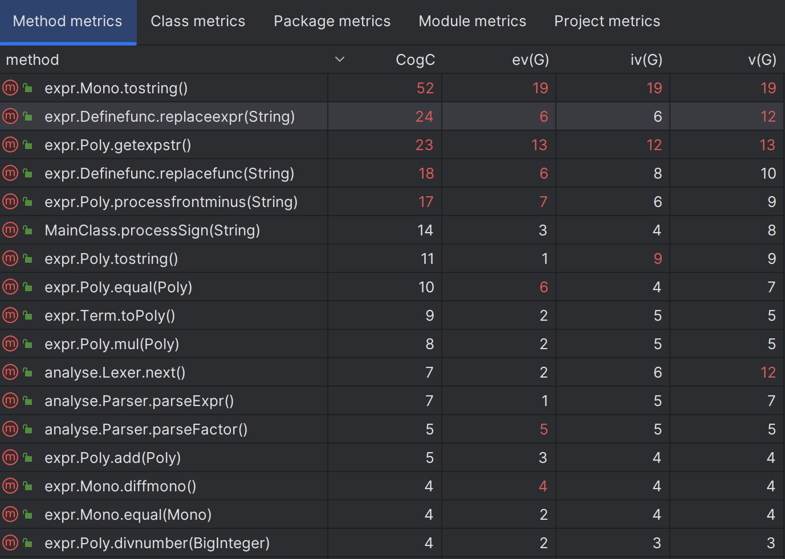

前言
第一单元的主题主要是表达式展开，一共有三次作业，第一次无嵌套单变量表达式展开，第二次含有自定义函数和指数函数并且可嵌套的单变量表达式展开，第三次增加求导因子和自定义函数可按规则互相调用。
三次作业是递进的，第一次由于刚接触递归下降法感觉无从下手，第二次作业相对难度最高，第三次只需在前两次的基础上略作改动即可。经过近一个月的学习，OO第一单元终于结束了。接下来我会对三次作业进行分析，并总结学习心得和体会。
第一次作业分析
总体分析
第一次作业的表达式主要包括以下三个部分：Expr，Term，Factor， 而Factor根据形式化表述可以分为三种，幂函数，常数因子，以及表达式因子。Term由一系列相乘的Factor构成，故利用Arraylist\<Factor>作为容器，Expr由一系列相加减的Term构成，故利用Arraylist\<Term>作为容器。下图是课程PPT中对这一结构的概括图。
通过递归下降算法处理表达式解析实验的学习，我对递归下降算法的优点有了初步的认识。于是本次作业中我沿用了实验中提供的架构。
实验中对ExprFactor,Number,Varible的共同行为特征进行抽象，提取出了Factor接口，我的架构中同样采取了这种模式，不过对于表达式因子额外创建了一个类Exprfactor，不同于Expr，采用表达式base加指数index，Expr和Term同样实现了Factor的接口，在后面再具体描述。
递归下降算法主要通过lexer和parser两个类。lexer主要对表达式中的最小单元进行提取，比如数字，变量因子，以及各种符号，parser主要用于根据形式化文法解析表达式，通过parseExpr调用parseTerm，parseTerm调用parseFactor，而Factor根据当前lexer提取到的token判断是哪种Factor，实例化对象并返回给Term，Term再返回给Expr。至此，表达式中的信息已全部提取出来。值得一提的是，对于表达式因子，这能递归调用parseExpr，刚开始接触可能不是很好理解，但是这个方法可以很好的处理表达式展开的问题。
接下来我概括一下我的处理流程。
-
预处理字符串
- 去除表达式中所有空白字符
- 将表达式中连续的加减号替换成单个加减号
- 将^+替换成^ (这一步并不是很必要)
-
利用递归下降法进行表达式解析，在解析的过程中化简并存储统一的形式，具体在架构设计说明
-
输出合并完的表达式，注意简化输出形式
程序结构分析
复杂度分析
以下摘自网上介绍：
ev(G) 基本复杂度是用来衡量程序非结构化程度的，基本复杂度高意味着非结构化程度高，难以模块化和维护。
iv(G) 模块设计复杂度是用来衡量模块判定结构，即模块和其他模块的调用关系。软件模块设计复杂度高意味模块耦合度高，这将导致模块难于隔离、维护和复用。
v(G) 是用来衡量一个模块判定结构的复杂程度，数量上表现为独立路径的条数，即合理的预防错误所需测试的最少路径条数。我按照复杂度排行截取了我的代码中复杂度较大的一部分，可以看到Mono的tostring方法复杂度较大，是由于Mono输出中我对各种情况进行了判断简化输出，所以复杂度较大。其他方法的复杂度都控制的比较好。
UML类图
第一次作业主要是单层括号单变量表达式的展开，以下是我本次作业的UML类图。
Poly类和Mono类是我这次作业的核心，具体解释详见架构设计体验，我的关于表达式的部分类都实现了一个Factor接口，实现向Poly类的转化，借助这个Poly类实现加减乘等运算，最后通过tostring统一进行输出。
架构设计体验
本次作业中我的基本计算单元可以归纳成如下形式
$$
Mono=a_ix^{n_i}
$$
数字和变量因子可以直接用这种形式表达，对应UML类图中的Mono类，而表达式则需一系列的Mono类相加，故引入Poly类，形式如下
$$
Poly=\sum a_ix^{n_i}
$$
可以发现表达式可以转化成Poly的形式方便计算，同样的，数字和变量因子的Mono形式也就是只有一项的Poly,表达式展开的问题就可以得到如下转化：
将Factor转化成Poly，Term由一系列Poly相乘得到一个Poly，Expr由一系列Poly相加得到一个Poly，也就是我们最终的表达式存储形式。所以，只要我们写好Poly的加法和乘法方法，这个问题总体上就迎刃而解了。（加法和乘法的实现和优化见性能优化分析）
性能优化分析
- 在实现
Poly的加法和乘法时，有以下几点需要注意的。
-
Mono与Mono相加，可以判断他们指数是否相同，相同则可以合并成一个Mono，也就是一项的Poly，不相同则相加形成一个Poly -
Poly与Mono相加，就是Mono与Poly里的每一项Mono比较，看是否能够合并，都不能则给Poly新的一项 -
Poly与Poly相加，就是两个Poly里的所有Mono相加，注意每加一项要与前面的比较是否可以合并//poly中加法处理 public void addmono(Mono mono) { for (Mono tmp : monos) { if (mono.equal(tmp)) { tmp.addCoeff(mono.getCoeff()); return; } } this.monos.add(mono.deepcopy()); } public Poly add(Poly a) { //返回加后的多项式 Poly result = this.deepcopy(); if (result.getArraylist().isEmpty()) { result = a.deepcopy(); return result; } else if (a.getArraylist().isEmpty()) { return result; } else { for (Mono tmp1 : a.getArraylist()) { result.addmono(tmp1); } } return result; }Poly的乘法与加法类似，不再赘述，都是要注意与已有的项是否能够合并。
此外可以看到，我在代码中使用了deepcopy()方法，是由于担心后续处理以及以后的作业会有什么地方会对此处有影响，所以统一采取深拷贝的形式避免隐藏的的bug。
- 在最后输出的时候，要注意系数为零的项省略
- 考虑到x-1要优于-1+x，故要尽可能的让最前面一项为正，我的处理方法是构建完结果字符串后，再把其中符号为+的项提前，也就是进行后处理，尽量把这个过程拆分开，不要影响存储的
Poly。
程序bug分析
第一次作业我的互测和强侧均未出现bug。在互测环节，主要的bug有以下几点。
1.所有项系数都为0，最后没有输出
2.有的同学用hashmap存储Poly中指数和系数的关系，在输出数字的时候没有输出加号，比如x+1+x^2输出x+1x^2，由于遍历hashmap顺序未知，只在较少的情况下出现这个bug，顺利过了强测，在互测环节是通过评测机大量数据找到了这个bug。
第二次作业分析
总体分析
第二次作业新增支持嵌套多层括号；新增指数函数因子，指数函数括号内部包含任意因子；新增自定义函数因子，但自定义函数的函数表达式中不会调用其他自定义函数。
总体来说支持嵌套多层括号实现比较简单，第一次作业的设计已经能够实现；指数函数的实现应该是比较难的部分，因为指数部分是多项式，需要考虑如何实现；自定义函数可以通过语法树或者字符串替换实现，总体来说难度不大。
程序结构分析
复杂度分析
第二次作业中Mono的tostring方法复杂度进一步增大，是由于新增指数函数的输出，为了考虑各种化简情况，进行了比较复杂的嵌套判断，在不改变原有架构的情况下比较难以实现，同时耦合度也增大，是由于为了简化单个方法，把指数情况下的化简分给一个新的方法Poly.getexpstr()，这个方法由于同样的原因复杂度较大；另一部分复杂度明显增加的是自定义函数的字符替换，这个是一个比较面向过程的处理，处理得比较繁琐，复杂度也比较大。
类中最复杂的也就是Poly和Definefunc类，Definefunc比较面对过程，而Poly承担了大部分的计算和化简输出核心任务，复杂度比较大。
UML类图
第二次作业主要的变化是新增了Definefunc类进行字符串替换，与其他类相对独立，从而使后面解析字符串的过程解耦程度较好。新增了Expofunc类存储和处理指数函数，同样实现了Factor接口，同时Mono类进行了调整，详见架构设计体验部分。
架构设计体验
第二次作业中我的基本计算单元由于新增指数函数进行了修改，可以归纳成如下形式
$$
Mono=a_ix^{n_i}e^{expr}
$$
对应UML类图中的Mono类，而Poly类形式如下
$$
Poly=\sum a_ix^{n_i}e^{expr}
$$
这次作业的主要难点在于Mono类新增指数函数部分对于表达式的化简合并造成了影响，我们判断两个Mono实例相等需要判断三个部分相等：系数，x的次数，e的指数部分。而e的指数部分我选择先将这个表达式转换成Poly类，Poly相等的判断又需要逐个比较Mono，这个过程比较复杂。这其实也是一个递归的过程，判断Mono可以合并可以首先比较次数，再比较指数，指数的比较也就是Poly的比较又会绕到Mono的比较，直到指数部分为空，Mono变成第一次作业的形式。这时候可以直接比较，然后逐步返回。可以借助下面的部分代码理解。
// Mono equal方法
public boolean equal(Mono a) {
if (this.epoly.getArr().isEmpty() && a.getepo().getArr().isEmpty()) {
return a.getXindex().equals(this.xindex);
} else {
return a.getXindex().equals(this.xindex) && a.getepo().equal(this.epoly);
}
}//Poly equal方法
public Boolean equal(Poly a) {
this.deletezero();
a.deletezero();
if (this.monos.size() != a.getArr().size()) {
return false;
}
boolean judall = true;
for (Mono tmp : this.monos) {
boolean judsingle = false;
for (Mono tmp2 : a.getArr()) {
if (tmp.equal(tmp2) && tmp.getcoe().equals(tmp2.getcoe())) {
judsingle = true;
break;
}
}
if (!judsingle) {
judall = false;
break;
}
}
return judall;
}关于自定义函数我选择字符串替换的方式，是为了这一过程相对独立，不会影响后面的处理，我的Definefunc类主要包含以下方法，要注意的是实参中可能含有f(x,y)这种形式，所以在提取实参列表时要注意括号和逗号的处理，不能简单地用逗号分隔得到实参列表。
//Definefunc类
private final HashMap<String, ArrayList<String>> nametoParameter; //函数名对应形参列表
private final HashMap<String, String> nametoExpr; //函数名对应的表达式
public void addfunc(String s) { //存储当前已有的自定义函数，提取表达式和形参列表
}
public String replacefunc(String s) { //f(x,y)-----f(x,2*x) -> 把x和2*x代入x，y，对单个函数替换
}
public String replaceexpr(String s) { //替换含有自定义函数的整个表达式
·······
while (result.contains("g") || result.contains("h") || result.contains("f")) {
}
}以下是对于自定义函数参数保护的核心代码，可以从注释中看出保护的方法。
String afterExpr = originalExpr.replace("exp", "@"); //保护exp
ArrayList<String> argumentprotect = new ArrayList<>(); //保护形参
argumentprotect.add("a");
argumentprotect.add("b");
argumentprotect.add("c");
ArrayList<String> parameter = nametoParameter.get(name); // 形参列表
for (int i = 0; i < parameter.size(); i++) {
afterExpr = afterExpr.replace(parameter.get(i), argumentprotect.get(i)); //先替换成被保护的参数
}
for (int i = 0; i < argumentlist.size(); i++) {
afterExpr = afterExpr.replace(argumentprotect.get(i), "(" + argumentlist.get(i) + ")");
//再换成加括号的实参
}
afterExpr = afterExpr.replace("@", "exp");//替换回来性能优化分析
第二次作业的优化主要是对指数函数输出的优化，以下是一些基本的优化
- exp(0)=1
- exp((2*x))=exp(x)^2
- exp((x))=exp(x)
有一点要注意：exp((-x))不能化简为exp((x))^-1，指数部分不能为负数，部分同学因为这个产生了bug
有一个难点是由于 exp(ax+by)=exp(x)^a∗exp(y)^b ,指数函数可以进行较大可能的优化，由于并没有考虑到一个比较完善的化简，故选择不对这部分进行化简。有一个处理方法是提取a和b的最大公因数到指数外边，尽管这未必是最好的优化，可能还会让长度变长，比如exp(2x+4x^2)=exp(x+2*x^2)^2；我们只要做好长度判断，还是可以在部分情况下简化输出的，强测性能测试也证明这是兼顾时间复杂度和简介程度相对不错的策略。
还有针对多层嵌套，Poly中含有的Mono可能会非常多，我们要及时对容器进行清理，删除其中系数为0的项。这样可以保证数据冗余得到控制。
public void deletezero() {
this.monos.removeIf(s -> s.getcoe().equals(BigInteger.ZERO));
}程序bug分析
我的程序在强测和互测中均未出现bug。
在同房间和与其他同学的交流中发现了以下bug：
- exp(1)*exp(-1)=exp(())，是由于输出没有处理好，是通过大量测试发现的
- exp((-x))=exp((x))^-1，没有考虑到指数不能为负，可以从tostring的输出发现从而针对性的构造样例
- 自定义函数的替换没有处理好，exp含有x，要注意exp的保护
- 自定义函数f(y,x)=x+y，出现带入实参时先代入y，然后又把所有替换完的x替换成第二个实参，这也是要注意参数的保护。
第三次作业分析
总体分析
第三次作业支持求导操作,新增求导算子，求导因子可以出现在很多位置，包括函数调用实参，指数函数内部等；函数表达式中支持调用其他“已定义的”函数。
针对函数表达式中支持调用其他“已定义的”函数，我仍然采用了字符串替换的操作，只需对传入的新的函数表达式先同样进行一遍已有自定义函数的替换，代码表现出了较好的可拓展性。
针对求导算子，由于我采用了Mono—Poly的结构，只需把要求导的部分转换成Poly，然后再对含有的Mono逐个求导并相加合并，所以只需写好Mono的求导即可，Mono的形式比较简单，求导也不复杂。
程序结构分析
复杂度分析

本次作业改动比较小，复杂度除了新增Mono.diffmono()方法且不算复杂，没有较大变化，不再赘述。
UML类图
本次新增Defactor类，用于接收一个Expr，将其转化成Poly，再对Poly求导并存储求导后的Poly。其他部分没有较大变化，不再赘述。
最终的程序规模统计
以上是我最终的代码规模统计，可以看到总行数899行，源代码行数750行。
架构设计体验
由于前两次的代码可拓展性比较好，加上第三次作业的新增要求不多，第三次作业并没有做较大的改动。
对于函数定义时的嵌套，只需对新加函数的表达式使用一遍表达式替换，即可消除已有的自定义函数。
对于求导的处理，可以考虑写成更简单的形式，不过我开始就先进行分类，由于担心改动出bug，选择了保留。
public Poly diffmono() {
if (this.isnumber()) { //单数字
······
} else if (this.isvar()) { //单变量
······
} else if (this.isexpofunc()) { //单指数函数
······
} else { //复合形式
······
}
}性能优化分析
针对第三次作业并没有新增可以优化的点，主要还是第二次作业中优化的方法。我在第三次作业中把指数函数中的指数最大公因数提取出来，实现了小部分优化。
//在指数中的Poly含有多个Mono，有可能能提取的公因数时
BigInteger gcd = this.getgcd();
Poly tmp = this.deepcopy();
tmp = tmp.divnumber(gcd);
String a = "exp((" + this.tostring() + "))";
String b = "exp((" + tmp.tostring() + "))^" + gcd;
if (a.length() <= b.length()) {
return a;
} else {
return b;
}程序bug分析
第三次作业由于经过了前两次的迭代，大家的bug都比较少。在第三次互测中出现了卡时间的hack，比如数据
0
dx(exp(exp(exp(exp(exp(exp(exp(exp(x^2)))))))))如果程序中没有较好的处理各种数据的解析和合并，可能会出现超时的现象。
可拓展性分析
假设以后还有类似表达式展开的作业，可以通过修改Mono和Poly项形式以及相对应的方法来拓展，同时，对于多变量的表达式展开，可以把多变量做类似x的处理，实现化简。
整体架构分析
在三次作业中我并没有重构，主要得益于Mono—Poly结构的统一形式以及递归下降算法的优势。
首先，Mono—Poly结构可以把所有的因子统一成一个形式，便于化简与合并，即使新增因子只需要对Mono进行修改。
其次，我选择了递归下降算法，面对不断增加的因子类型，只需要新增parser和lexer中的对应方法即可。
强测互测分析
由于我们时间和精力的有限，必然不可能手动对各种各样的表达式进行测试和化简，所以自动化的大数据测评机就显得十分重要。通过自己程序的测评，我们可以记录下一些容易错的样例，加入到测评机的必选特殊数据中，在互测的时候针对性的先检查这些样例，再通过大量数据探索其他的错误，这样节省时间的同时也可以取得不错的效果。
心得体会
通过第一单元的学习，我主要有以下几点心得体会：
- 将多层次的对象进行统一管理，在本次作业中也就是实现Factor接口，大大减轻了工作量以及思维难度
- 尽量把一个过于复杂的方法拆分分成几个功能部分的组合，比较方便debug，同时也为以后的需求提供了一些工具方法
- 优化的时候一定要保证正确性，不要为了性能丢弃正确性
- 可以和同学交流思路，学习较好的架构设计，关注讨论区
- 代码的可拓展性很重要，第一次第二次作业比较痛苦，第三次作业由于比较好的架构就还算轻松。
- 在无从下手的时候不妨参考一下学长学姐的博客
如果您喜欢此博客或发现它对您有用，则欢迎对此发表评论。 也欢迎您共享此博客，以便更多人可以参与。 如果博客中使用的图像侵犯了您的版权，请与作者联系以将其删除。 谢谢 ！